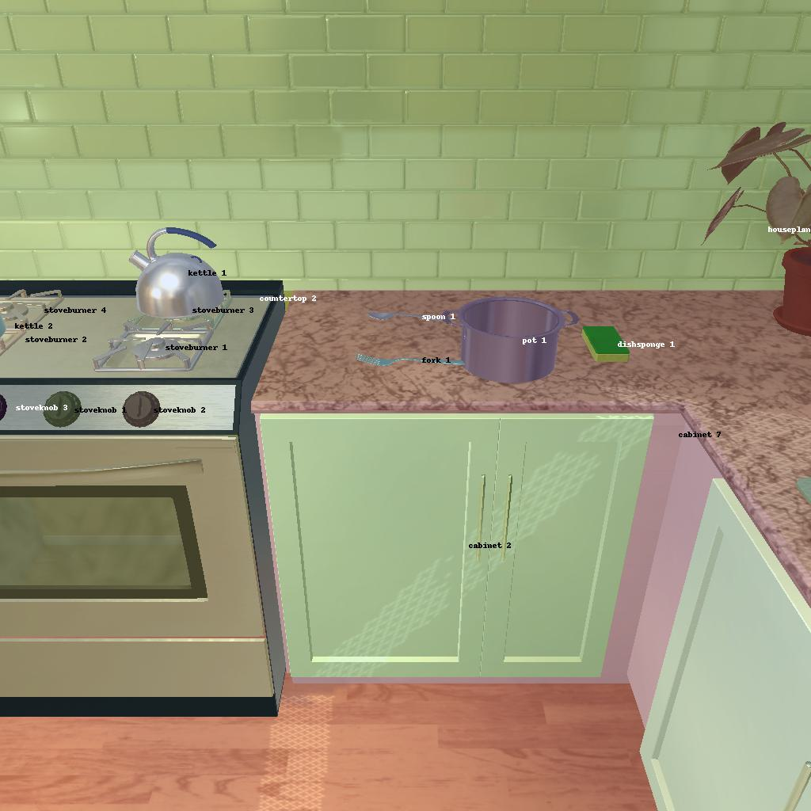
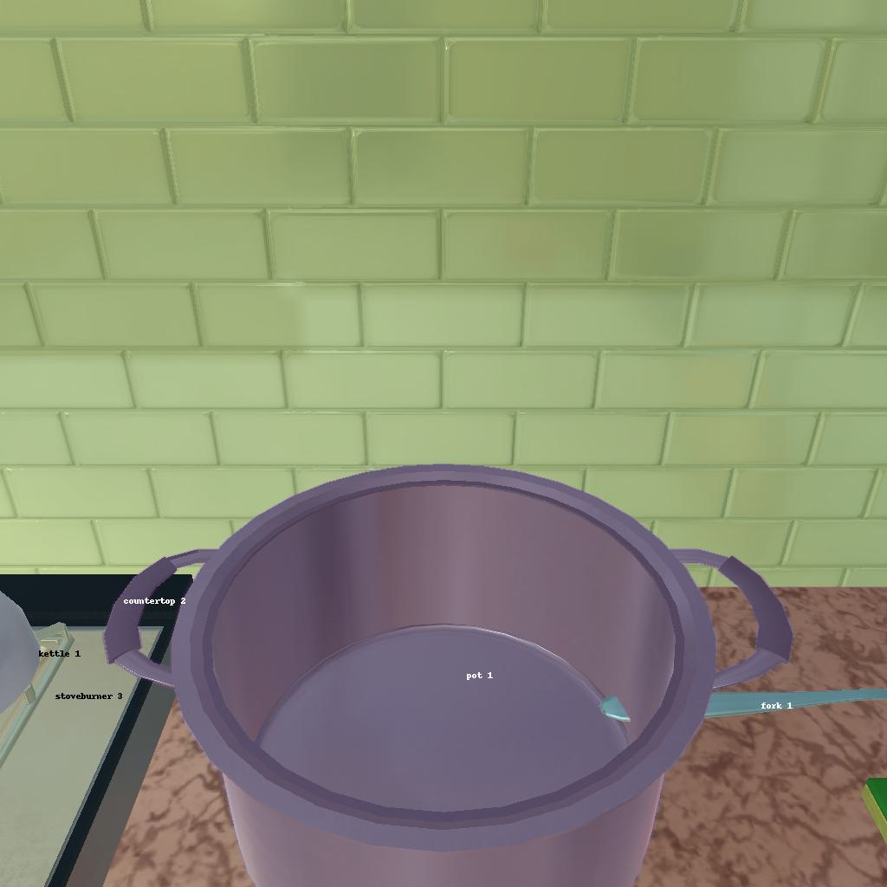

---------------------------------------------------------task: 16---------------------------------------------------------
--------------------------------------------------------------------------------------------------------------------------------------------------------------------
--------------------------------------------------------------------------------------------------------------------------------------------------------------------
Step:--------------------------------------------------------------------------3-------------------------------------------------------------------------------
----------------------------------------
VLM Prompt:
Image1:
Image2:
Image3:
**Instruction**
1. Analyze the provided image to identify all visible household objects, focusing on those relevant to the task description "cool some pan and put it in sinkbasin."
2. Use the analysis of the image and the task hint "The agent must find an object of the desired type, pick it up, go to a fridge, cool the object with the fridge, then find the correct location to place it, and put it down there. The agent does not need to use the fridge button or open the fridge to cool the object, and the agent just needs to do action that is "cool the object with the fridge"." to answer the question: what is the most reasonable action in the choices for the task description "cool some pan and put it in sinkbasin"?
4. Decide and write the answer using the template: The answer is: (i): , where i is the real number. If there is no desired object in the image, search every place based on **Initial Observation** to find the object. And if no one is exactly correct, choose a similar answer.
**Initial Observation**
You are in the middle of a room. Looking quickly around you, you can see cabinet (1-9), countertop (1-3), drawer (1-9), stoveburner (1-4), microwave (1), sink (1), fridge (1), toaster (1), coffeemachine (1), sinkbasin (1), shelf (1-3), garbagecan (1)
**Answer Choices**
(1): go to cabinet 1
(2): go to countertop 1
(3): go to cabinet 2
(4): go to drawer 1
(5): go to drawer 2
(6): go to drawer 3
(7): go to drawer 4
(8): go to drawer 5
(9): go to stoveburner 2
(10): go to stoveburner 3
(11): go to stoveburner 4
(12): go to cabinet 3
(13): go to cabinet 4
(14): go to microwave 1
(15): go to cabinet 5
(16): go to cabinet 6
(17): go to cabinet 7
(18): go to sink 1
(19): go to fridge 1
(20): go to toaster 1
(21): go to coffeemachine 1
(22): go to cabinet 8
(23): go to drawer 6
(24): go to drawer 7
(25): go to drawer 8
(26): go to sinkbasin 1
(27): go to shelf 1
(28): go to shelf 2
(29): go to countertop 3
(30): go to shelf 3
(31): go to drawer 9
(32): go to cabinet 9
(33): go to garbagecan 1
(34): put pot 1 in/on countertop 2
(35): examine pot 1
(36): examine countertop 2
**Answer**
Let's think step by step by following the instructions.
----------------------------------------
----------------------------------------
Original Response:
- First, we need to identify all visible household objects relevant to the task "cool some pan and put it in sinkbasin." From Image 1, we can see a pot (pot 1) on countertop 2, which is likely the object we need to cool and then put in the sinkbasin.
- According to the task hint, the agent must find the object (pot 1), pick it up, cool it with the fridge, and then place it in the correct location (sinkbasin 1).
- Since the agent does not need to use the fridge button or open the fridge to cool the object, we can skip the steps involving interaction with the fridge directly.
- The most reasonable action from the choices would be to first pick up pot 1 from countertop 2, cool it (assuming the agent knows how to do it without direct interaction with the fridge), and then go to sinkbasin 1 to put it down there.
The answer is: (34): put pot 1 in/on countertop 2. This action allows the agent to pick up the pot, which is the next logical step in completing the task.
----------------------------------------
----------------------------------------
>>> Refine Original VLM Response and Get Pure Action: put pot 1 in/on countertop 2
----------------------------------------
-----------------------------------------------------------------
Running time: 14.501631498336792 seconds
Total Money: 9.769570000000003
-----------------------------------------------------------------
-----------------------------------------------------------------
Text Observation:Nothing happens.
-----------------------------------------------------------------
UNSUCCEED